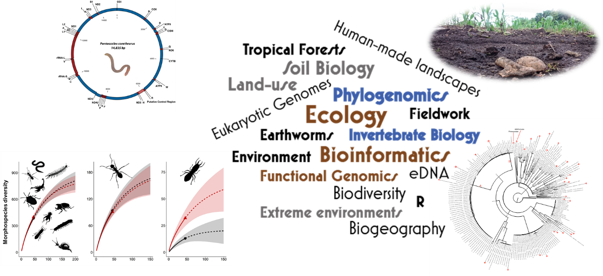

Genomics & Biodiversity — from the field to the genome
Contact: Luís Cunha (luis.cunha@uc.pt) — Team page
Co-supervisors: José Paulo Sousa soil ecology · ecotoxicology · functional ecology (jps@zoo.uc.pt) · Nadja den Besten remote sensing · hydrology · GIS (nadjadenbesten@gmail.com) · Catarina Pinho DNA metabarcoding · evolutionary biology · herpetology (cpinho541@gmail.com) · Filipa Reis earthworm ecology · soil biology · ecotoxicology (filipa.f.reis@uc.pt)
Research Page: EnGeL – E3G — cfe.uc.pt/environmental-genomics-lab
Description
At the Environmental Genomics Lab (EnGeL, University of Coimbra), we use genomics to understand how soil life and biodiversity adapt, evolve and persist under environmental and human pressure — from single genes to whole genomes, metagenomes and transcriptomes. A thesis with us means real research questions on real datasets, and a versatile, in-demand skill set spanning the wet lab, the command line and the field.
- Soil invertebrate biodiversity
- Specimens for DNA barcoding
- Real-time Nanopore sequencing
Research Themes
- Soil biodiversity & DNA (meta)barcoding — earthworms and soil macrofauna as models; integrative morphological + molecular taxonomy, from Portugal and the UK to the Amazon, Guyana and the Galápagos.
- Genomes, transcriptomes & microbiomes — invertebrate genomes by Nanopore, host and soil microbiomes (16S/ITS), and (meta)transcriptomics linking diversity to function.
- Life in extreme & changing environments — adaptation to volcanic/geothermal soils and hydrothermal springs, and responses to anthropogenic disturbance.
- Agriculture, soil health & biological invasion — effects of pesticides, biofertilizers and management on soil communities, and the spread of peregrine earthworms (BENCHMARKS · ECOSTACK · SUSTERRA).
Projects — Data Ready to Analyse
- Microbiomes (16S/ITS) — bee-gut & biofortification, volcano isopod gut, and soil under pesticides, biofertilizers.
- Invertebrate genomes (Nanopore & Others) — Eisenia andrei, Pontoscolex corethrurus and more.
- (Meta)transcriptomics — earthworms exposed to volcanic conditions; hydrothermal-spring metatranscriptomes.
- Barcoding & field — fauna COI barcoding; pitfall-preservative evaluation.
- Ecotoxicology & metallomics — metal-transplant experiments in volcanic soils.
Many datasets are already generated — start analysing from day one, and several projects can run fully in silico.
Skills & Techniques You'll Develop
- In the lab — DNA/RNA extraction, PCR & qPCR, molecular-marker development (COI barcoding, mtDNA, SSRs), library preparation, and next-generation sequencing on Illumina and Oxford Nanopore (long-read, real-time).
- At the computer — genome, metagenome & transcriptome assembly and annotation, barcoding/metabarcoding, variant calling, population & landscape genomics and phylogenomics — in R and on the Linux command line / HPC.
- In the field & beyond — soil biodiversity sampling and study design, integrative taxonomy, FAIR & open reproducible science, and scientific writing within an international team (UK · Brazil · EU).
